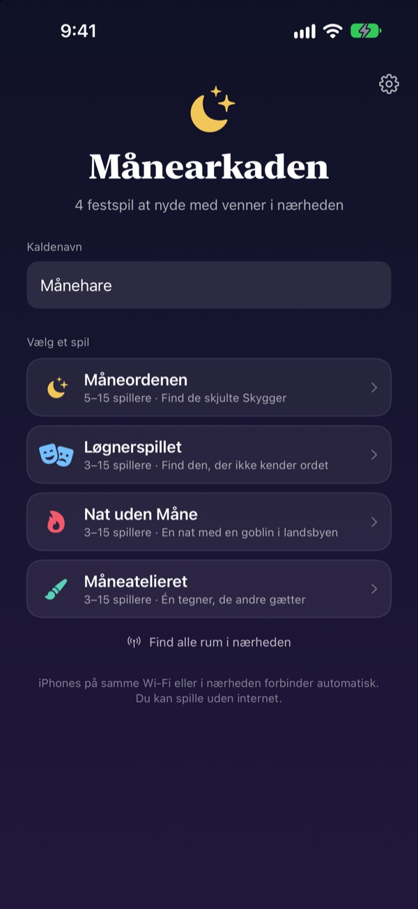
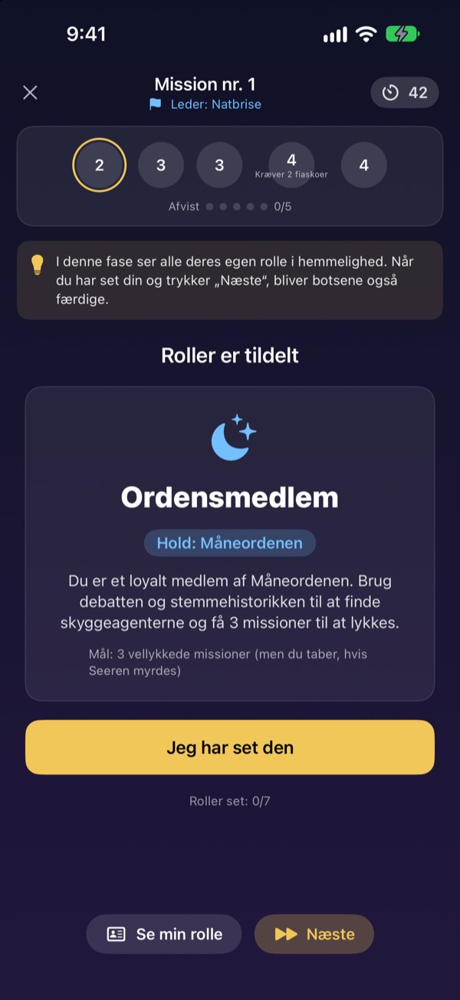
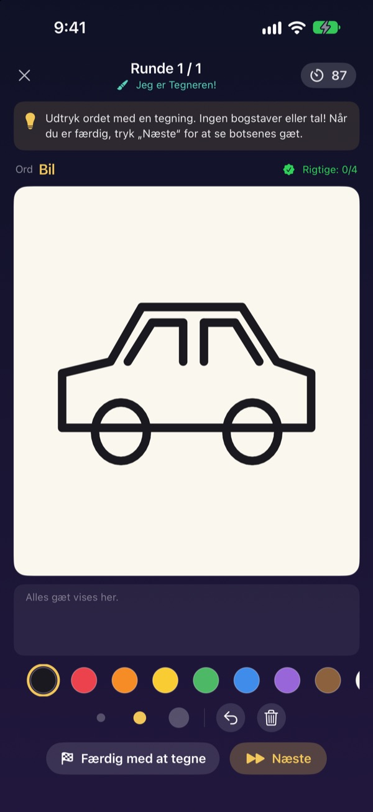
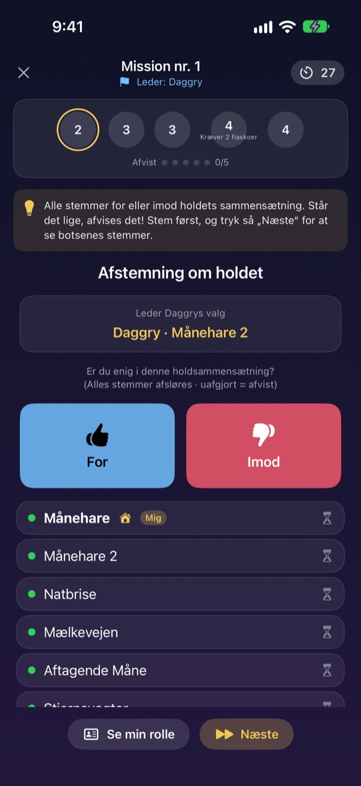

Er alle her?
Frem med iPhonen.
Én opretter et rum, og alle i nærheden er med på få sekunder. Roller og hemmelige ord vises kun på ens egen skærm: ingen kort, og ingen skal sidde udenfor og styre spillet.
Alle spil er gratis. Ingen konto, intet internet.

Spil en runde Løgnerspillet
Forestil dig fem iPhones på bordet, og tryk på dem én ad gangen for at kigge. Kun én spiller kender ikke ordet. I kan også sende skærmen rundt.
Alle er her, men hvad skal vi spille?
Spilaften, sommerhusweekend, jul med familien. I spil med skjulte roller må én sidde over og styre, og foldede sedler er aldrig helt hemmelige. I et sommerhus med dårligt wifi går onlinespil heller ikke. I Månearkaden klarer iPhonerne spilstyringen, rollefordelingen og forbindelsen.
Din rolle er kun på din skærm
Når spillet starter, får hver iPhone sin egen rolle eller sit eget ord. Ingen kortuddeling, intet ”alle lukker øjnene”.
Under afstemningen kan man kun se, hvem der har stemt. Hvem der stemte på hvem, er hemmeligt indtil afsløringen.

Fire spil til ethvert selskab
I Løgnerspillet vinder den bedste snakker, i Måneordenen jager I Skyggerne med missioner og afstemninger, i Nat uden Måne finder I goblinen på én nat, og i Måneatelieret tegner én, mens resten gætter.
Måneordenen fra 5 spillere, de andre fra 3, alle op til 15.

Nyt spil? Lært på få minutter
Hvert spil har tilstanden ”Sådan spiller du”, hvor du spiller en runde med bots trin for trin. Læs tippet øverst, og tryk på Næste.
Hvis appen lukker, eller forbindelsen ryger, trykker du på Fortsæt på startskærmen og er tilbage i samme runde.

Kom i gang i tre trin
- 1
Kaldenavn og spil
Alle åbner appen, skriver et kaldenavn og vælger spil.
- 2
Opret eller deltag i et rum
Én opretter et rum, de andre finder det under Find rum i nærheden.
- 3
Værten starter
Når alle er inde, trykker værten på Start spil. Appen klarer resten.
De fire spil
- Løgnerspillet · 3–15 spillere
- Alle får det samme ord undtagen én. På skift beskriver man det, og så stemmer man om løgneren. Gætter den afslørede løgner ordet, vinder vedkommende alligevel.
- Måneordenen · 5–15 spillere
- Afslør Skyggerne, der gemmer sig i Ordenen. Lederen vælger et missionshold, alle stemmer for eller imod, og holdet spiller i hemmelighed succes eller fiasko. Den side, der først vinder tre missioner, vinder.
- Nat uden Måne · 3–15 spillere
- Én nat, og en goblin gemmer sig i landsbyen. Om natten handler Shamanen, Nattetyven og Spasmageren i hemmelighed. Ved daggry diskuterer man og har kun én afstemning til at finde goblinen.
- Måneatelieret · 3–15 spillere
- Én tegner ordet, og resten gætter i chatten. Jo hurtigere du gætter rigtigt, jo flere point, og tegneren får point for hvert rigtigt gæt.
Alle spil kan først prøves alene med bots i tilstanden ”Sådan spiller du”.
Ofte stillede spørgsmål
Jeg kan ikke se rummet.
Tjek, at værten og spillerne er på samme wifi eller tæt på hinanden. Månearkaden skal være slået til under Indstillinger ▸ Anonymitet & sikkerhed ▸ Lokalt netværk for at finde enheder i nærheden. Med både wifi og Bluetooth slået til er forbindelsen mest stabil.
Skal jeg give adgang til lokalt netværk?
Ja, sådan finder appen iPhones i nærheden og forbinder til dem. Hvis du trykkede på Tillad ikke, slår du det til igen under Indstillinger ▸ Anonymitet & sikkerhed ▸ Lokalt netværk.
Forbindelsen røg midt i spillet.
Åbn appen igen, og tryk på Fortsæt på startskærmen for at komme tilbage til samme rum og runde. Rolle og point er der stadig. Tager det lang tid, så deltag igen fra rumlisten.
En spiller svarer ikke, og spillet sidder fast.
Værten kan til enhver tid fjerne en spiller, der ikke svarer, og spillet regner om med de tilbageværende og fortsætter. I GM-værtstilstand kan man også springe et fastlåst trin over.
Hvor mange spillere skal der til?
Måneordenen kræver 5. Løgnerspillet, Nat uden Måne og Måneatelieret starter fra 3. Alle kan tage op til 15. For få? Lær reglerne med bots i ”Sådan spiller du”.
Kræver det internet eller en konto?
Nej. Ingen tilmelding, intet login, intet internet. iPhones i nærheden forbinder direkte, og spildata sendes aldrig til en server.
Kan jeg prøve et spil alene først?
Ja. Vælg et spil og derefter ”Sådan spiller du (øv med bots)”. Bots kommer ind i rummet, og du spiller en hel runde trin for trin.
Hvordan melder jeg en fejl eller sender en idé?
Direkte i appen under Indstillinger (tandhjulet) ▸ Support eller på mail til adressen nedenfor. Vi svarer så hurtigt som muligt.
Fejl, idéer eller andet: skriv til mizzking75@gmail.com.